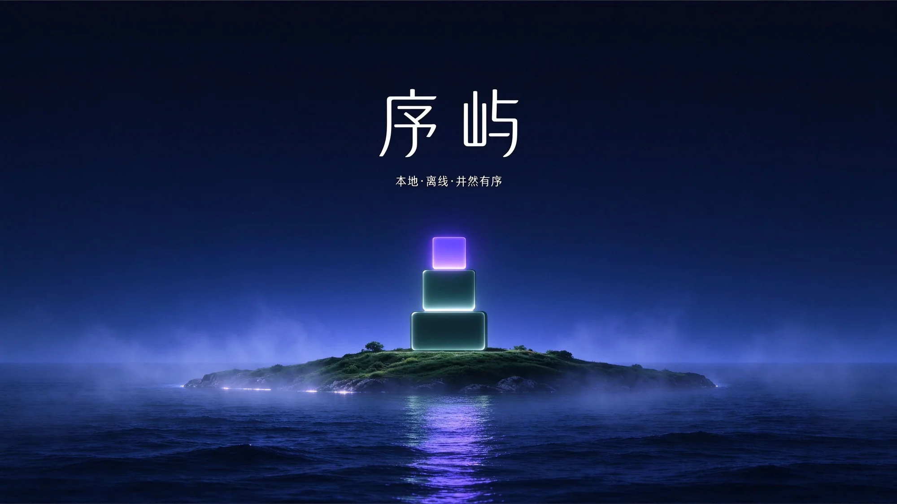
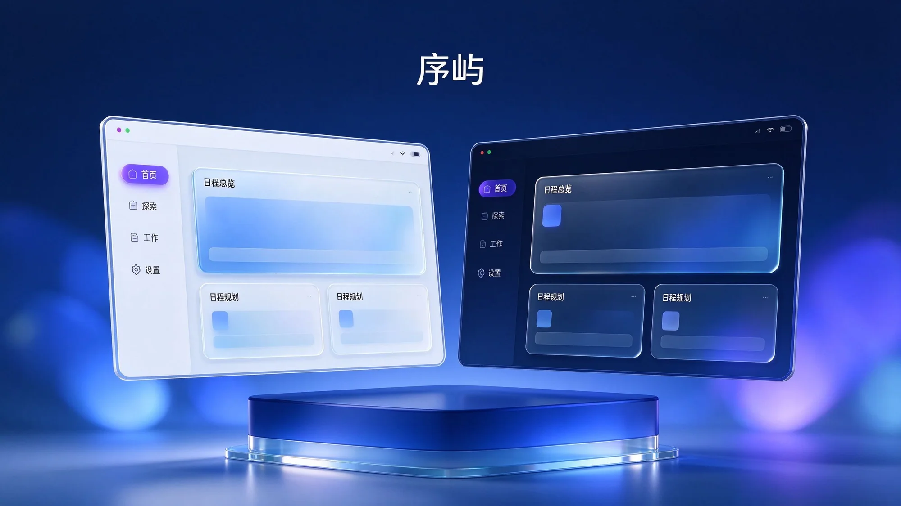
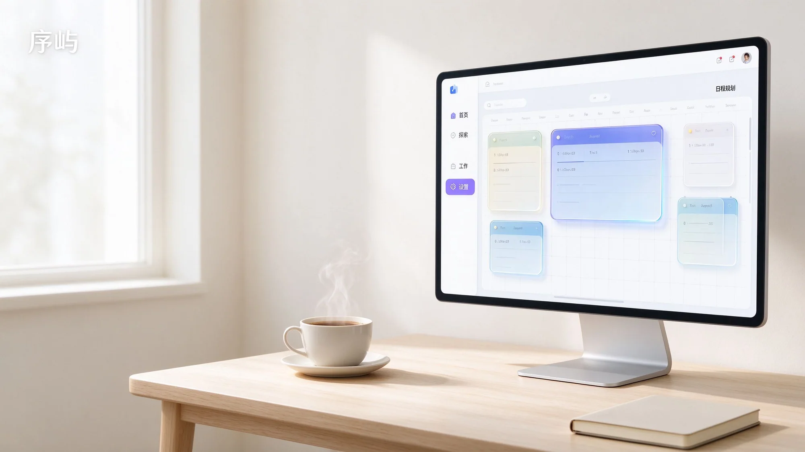

离线优先
没有登录、没有云同步、没有后台请求。断网、飞行模式、不开 Wi-Fi，都照常用。
XUYU · 本地离线日程管理
本地 · 离线 · 井然有序
日程、规划、简历、作品集，全部留在你自己的电脑里。
一个安装包，装完就能离线用。不需要注册账号，不会上传任何数据。
安装包暂未做代码签名。首次运行如出现「Windows 已保护你的电脑」，点更多信息 → 仍要运行即可。

序三块台阶自下而上收窄，像把日子一层层码好。
02 — 外观
白天是极简的玻璃与留白，夜晚转为深墨低光。一键切换，它记得你上次的选择。 背景可以换成任意一张图——整个窗口会化成水滴玻璃，连侧边菜单一起。


03 — 日程规划
滚轮缩放到 300%，空白处拖动漫游，左下角小地图俯瞰全局。 把整套日程框架拖进来，再把事项卡片嵌进某个时段——子卡会自动长高，把下面的格子让开。
04 — 全部功能
没有登录、没有云同步、没有后台请求。断网、飞行模式、不开 Wi-Fi，都照常用。
每一次拖拽、每一行文字改动都立刻写进本地文件。关掉软件、重启电脑，都不会丢。
DeepSeek、通义千问、智谱 GLM、Kimi、豆包任选，用自己的 Key，只在对话时联网。
多套模板即时切换，内容分块编辑，版式随文字自动撑开——不会溢出，随时改。
勾选作品，一键生成单文件 HTML 个人网站。双击即可打开，也可以发布到公网。
关掉表格和清单，在日式街角走两圈。天气、时间、五个可换的角色，都是本地的。
序屿不需要账号，也不问你联网。装好，就是你的。
下载 PC 版